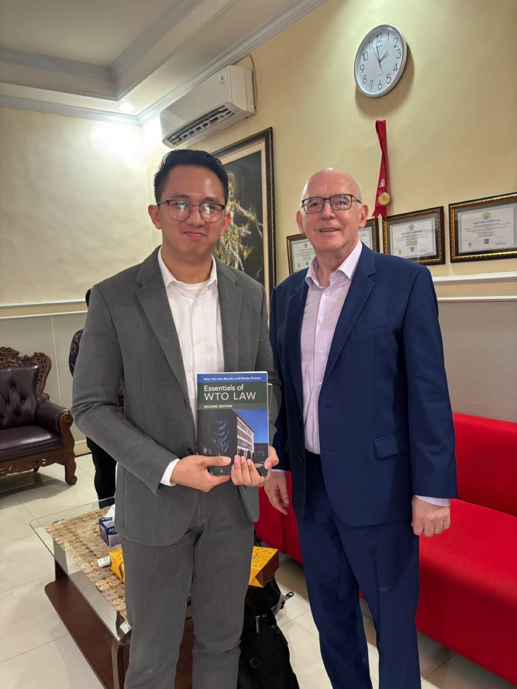
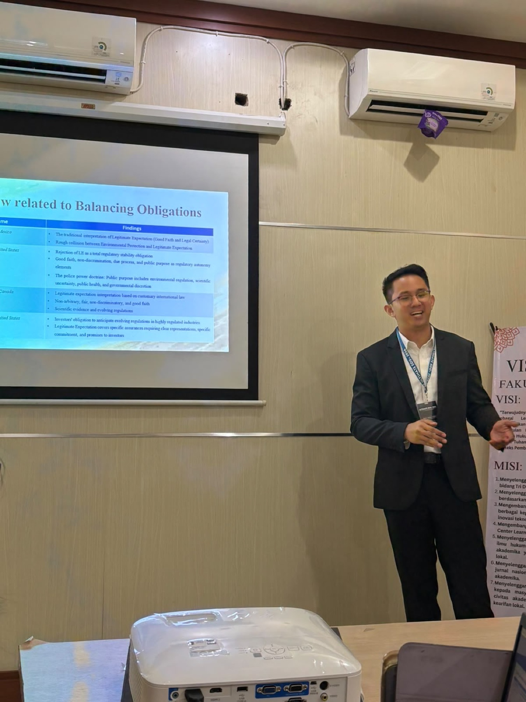

Dr. (Cand.) Putu George Matthew Simbolon, S.H., M.H. leads a research practice that publishes peer-reviewed scholarship alongside advising clients, government institutions, and international organizations on WTO law, international investment law, and trade-environment regulation. Legal research is core to how the Office practices, not an afterthought.

Independent legal analysis addressing specific legal questions.
Research concerning Indonesian legislation and implementing regulations.
Analysis of treaties, international agreements, international jurisprudence, and international legal principles.
Comparison between Indonesian law and foreign legal systems.
Identification and analysis of relevant court decisions and legal doctrines.
Mapping legislation and regulatory requirements applicable to a particular business activity.
WTO-consistency assessments of Indonesian regulations, Article XX environmental exception analysis, TBT Agreement compliance, trade-restrictive environmental measures, non-tariff measures, trade remedies, and WTO dispute jurisprudence.
CBAM and WTO law, climate-related trade measures and Article XX GATT, carbon pricing and international trade, climate measures affecting developing countries, extraterritorial environmental regulation, and the trade implications of the Paris Agreement.
The EU Deforestation Regulation and Indonesian supply chains, WTO implications of deforestation-free supply-chain rules, deforestation regulation and the palm-oil trade, CITES and international trade, and sustainability requirements affecting developing-country exporters.
Bilateral Investment Treaty analysis, investor–state dispute settlement research, expropriation, fair and equitable treatment, legitimate expectations, the police powers doctrine, and sustainable-development provisions in investment treaties.
Anti-dumping duty analysis, customs valuation, tariff classification, import/export restrictions, trade-remedy investigations, and customs compliance audits.
Comparative research between Indonesian law and other jurisdictions, including Germany, the EU, Australia, Singapore, the United Kingdom, and the United States, across contract, agency, civil liability, investment, environmental, commercial, administrative, and corporate law.
The research of Dr. (Cand.) Putu George Matthew Simbolon, S.H., M.H. has been published in more than two dozen academic outputs, including several Scopus-indexed journals, on subjects spanning WTO law, international investment law, international environmental law, and comparative law.
Full profiles: Google Scholar · ORCID · Scopus · ResearchGate
